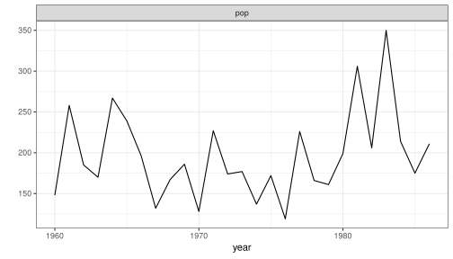
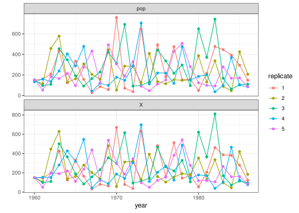
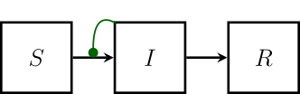
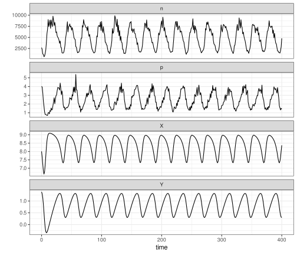
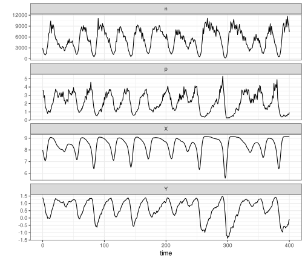

Examples
The Gompertz model
PartiallyObservedMarkovProcesses.Examples.parus_data — Constant
parus_dataParus major (Great Tit) census (all individuals), Wytham Wood, Oxfordshire. Global Population Dynamics Database dataset #10163. (NERC Centre for Population Biology, Imperial College (2010) The Global Population Dynamics Database Version 2. http://www.sw.ic.ac.uk/cpb/cpb/gpdd.html).
Original source: McCleery, R. & Perrins, C. (1991) Effects of predation on the numbers of Great Tits, Parus major. In: Bird Population Studies, edited by Perrins, C.M., Lebreton, J.-D. & Hirons, G.J.M. Oxford. Univ. Press. pp. 129–147.
PartiallyObservedMarkovProcesses.Examples.gompertz — Function
gompertz()gompertz is a PompObject containing Parus major data and a simple Gompertz population model. The population model has a single scalar state variable, $X_t$, which obeys
\[X_t = X_{t-1}^S\,K^{1-S}\,\varepsilon_t,\]
where $S = e^{-r\delta{t}}$ and $\varepsilon_t \sim \mathrm{LogNormal}(0,\sigma_p)$. The time-step is one unit: $\delta{t}=1$. The data are assumed to be drawn from a log-normal distribution. In particular,
\[\mathrm{pop}_t \sim \mathrm{LogNormal}(\log{X_t},\sigma_m).\]
Parameters
- r: the growth rate
- K: the equilibrium population density
- X0: the initial population density
- σₚ: process noise s.d.
- σₘ: measurement noise s.d.
View the Parus data:
using PartiallyObservedMarkovProcesses, RCall
using PartiallyObservedMarkovProcesses.Examples
P = gompertz()
d = melt(P)
R"""
$d |>
pivot_longer(-year) |>
ggplot(aes(x=year,y=value))+
geom_line()+
facet_wrap(~name,scales="free_y",ncol=1)+
labs(y="")+
theme_bw() -> pl
print(pl)
"""
View a few representative simulations:
using PartiallyObservedMarkovProcesses, RCall
using PartiallyObservedMarkovProcesses.Examples
P = gompertz()
Q = simulate(P;params=(r=4.5,K=210.0,σₚ=0.7,σₘ=0.1,X0=150.0),nsim=5)
d = melt(Q,:parset,:rep)
R"""
$d |>
pivot_longer(-c(year,rep,parset)) |>
ggplot(aes(x=year,y=value,group=rep,color=factor(rep)))+
geom_line()+
geom_point()+
facet_wrap(~name,scales="free_y",ncol=1)+
labs(y="",color="replicate")+
theme_bw() -> pl
print(pl)
"""
A simple SIR model
PartiallyObservedMarkovProcesses.Examples.sir — Function
sir(
β = 0.5, γ = 0.25, N = 10000,
ρ = 0.3, k = 10,
S0 = 0.9, I0 = 0.01, R0 = 0.1,
δt = 0.1, t0 = 0.0,
times = range(start=1.0,stop=90,step=1.0)
)sir returns a PompObject containing simulated SIR data.
Parameters
- β: transmission rate
- γ: recovery rate
- N: population size
- ρ: reporting rate
- k: overdispersion coefficient (negative binomial size parameter)
- S0, I0, R0: relative proportions of susceptible, infected, recovered (respectively) in the population at t=t0.
- δt: Euler stepsize
- t0: zero-time
- times: vector of observation times

The Rosenzweig-MacArthur model
Deterministic version
PartiallyObservedMarkovProcesses.Examples.drmca — Function
drmca(
r = 1, K = 1e4, A = 1e3,
b = 1e-3, c = 1, m = 0.8,
σ = 0.01,
N0 = 3000, P0 = 4, t0 = 0.0,
times = range(start=0,stop=500,step=0.2),
integrator = AutoTsit5(Rosenbrock23())
)Parameters
- r: intrinsic growth rate of prey
- K: carrying capacity for prey
- A: half-saturation prey density
- c: predator foraging rate
- b: predator yield (predators born per prey item killed)
- m: predator death rate
- σ: measurement noise magnitude
- N0, P0: initial densities
- t0: zero-time
- times: vector of observation times
- integrator: integration algorithm.
Observables
- n: prey density
- p: predator density
State variables
- $X = \log(N)$
- $Y = \log(P)$
Details
drmca returns a PompObject containing simulated data from a deterministic Rosenzweig-MacArthur model implemented as a vectorfield. Specifically, the model is the classical Rosenzweig-MacArthur model
\[\begin{aligned} \frac{dN}{dt} &= r N \left(1-\frac{N}{K}\right) - \frac{c N P}{1+N/A} \\ \frac{dP}{dt} &= \frac{b c N P}{1+N/A} - m P \\ \end{aligned}\]
There is also a stochastic version of this model available as an example (see rmca).
In this system, the predator is inviable unless $R = \frac{bcA}{m} > 1$. Even if the predator is viable, the environment is too impoverished to support predators unless $R>1+\frac{A}{K}$. If the environment is rich enough, and if moreover $R>\frac{1+\frac{A}{K}}{1-\frac{A}{K}}$, then the nontrivial equilibrium of the system is unstable. For the default parameters, we have $R = 1.25$ and $\frac{A}{K} = 0.1$, so the latter condition holds.
P = drmca(σ=0.1,times=range(0,400.0,step=1.0))
d = melt(P)
R"""
$d |>
pivot_longer(-time) |>
ggplot(aes(x=time,y=value))+
geom_path()+
facet_wrap(~name,scales="free_y",ncol=1)+
labs(y="")+
theme_bw() -> pl
print(pl)
"""
Stochastic version
PartiallyObservedMarkovProcesses.Examples.rmca — Function
rmca(
r = 1, K = 1e4, A = 1e3,
b = 1e-3, c = 1, m = 0.8,
V = 100, σ = 0.01,
N0 = 3000, P0 = 4, t0 = 0.0,
δt = 0.01,
times=range(start=0,stop=500,step=0.2)
)Parameters
- r: intrinsic growth rate of prey
- K: carrying capacity for prey
- A: half-saturation prey density
- c: predator foraging rate
- b: predator yield (predators born per prey item killed)
- m: predator death rate
- V: system size
- σ: measurement noise magnitude
- N0, P0: initial densities
- t0: zero-time
- δt: Euler stepsize
- times: vector of observation times
Observables
- n: prey density
- p: predator density
State variables
- $X = \log(N)$
- $Y = \log(P)$
Details
rmca returns a PompObject containing simulated data from a Rosenzweig-MacArthur model implemented as an Itô diffusion. Specifically, if $N$ and $P$ are prey and predator densities, respectively, then $dN = dG - dC - dS$ and $dP = b dS - dM$, where
\[\begin{aligned} dG &= r N dt + \sqrt{\frac{1}{V} r N} dW_1 \\ dC &= \frac{r N^2}{K} dt + \sqrt{\frac{1}{V} \frac{r N^2}{K}} dW_2 \\ dS &= \frac{c N P}{1+N/A} dt + \sqrt{\frac{1}{V} \frac{c N P}{1+N/A}} dW_3 \\ dM &= m P dt + \sqrt{\frac{1}{V} m P} dW_4 \\ \end{aligned}\]
Here, the $dW_i$ are increments of independent standard Wiener processes. Thus, the process noise scales demographically. Specifically, the system size, $V$, converts the densities $N$, $P$ into numbers. It controls the relative magnitude (coefficient of variation) of the demographic process noise. Moreover, $V$ determines a lower threshold on the population sizes, such that if ever $N V < 1$ or $P V < 1$, the population is taken to be extinct. Otherwise, it plays no role in the dynamics. The measurement error is assumed to scale environmentally:
\[\begin{aligned} n &\sim \mathrm{LogNormal}(\log{N},\sigma) \\ p &\sim \mathrm{LogNormal}(\log{P},\sigma) \\ \end{aligned}\]
Note that, in the limit $V\to\infty$, the Itô diffusion becomes the classical Rosenzweig-MacArthur ordinary differential equation model (see drmca):
\[\begin{aligned} \frac{dN}{dt} &= r N \left(1-\frac{N}{K}\right) - \frac{c N P}{1+N/A} \\ \frac{dP}{dt} &= \frac{b c N P}{1+N/A} - m P \\ \end{aligned}\]
A sample simulation.
P = rmca(σ=0.1,times=range(0,400.0,step=1.0))
d = melt(P)
R"""
$d |>
pivot_longer(-time) |>
ggplot(aes(x=time,y=value))+
geom_path()+
facet_wrap(~name,scales="free_y",ncol=1)+
labs(y="")+
theme_bw() -> pl
print(pl)
"""
Multivariate Brownian motion
PartiallyObservedMarkovProcesses.Examples.brownian_motion — Function
brownian_motion(;times, t0 = 0, x0, σ, τ)returns a PompObject for a multivariate Brownian motion process with observations at times. The zero-time is t0 and the starting state at that time is x0. The intensity of the Brownian motion is given by the matrix σ. The measurement error is multivariate normal with variance τ^⊤ τ.